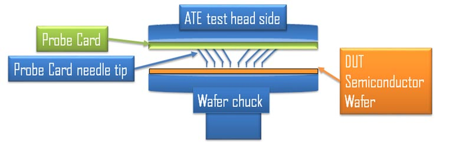
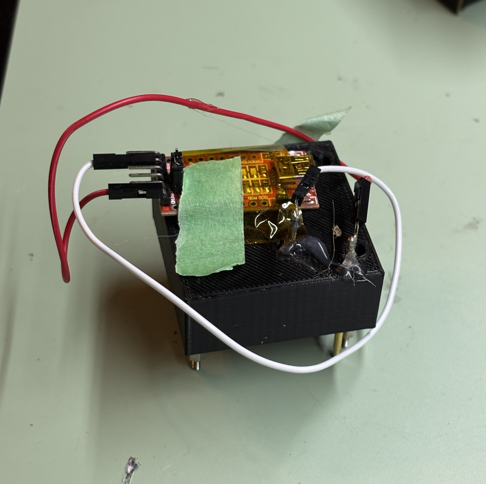
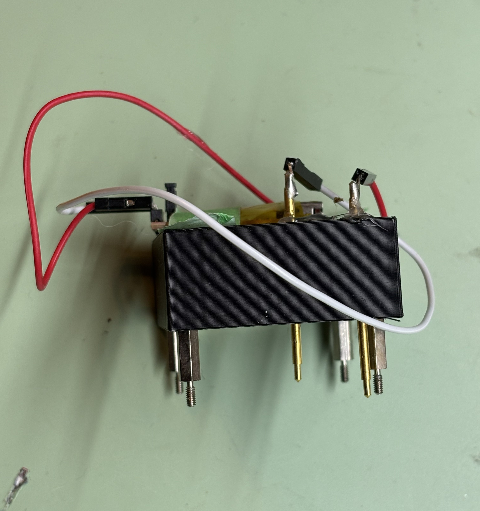
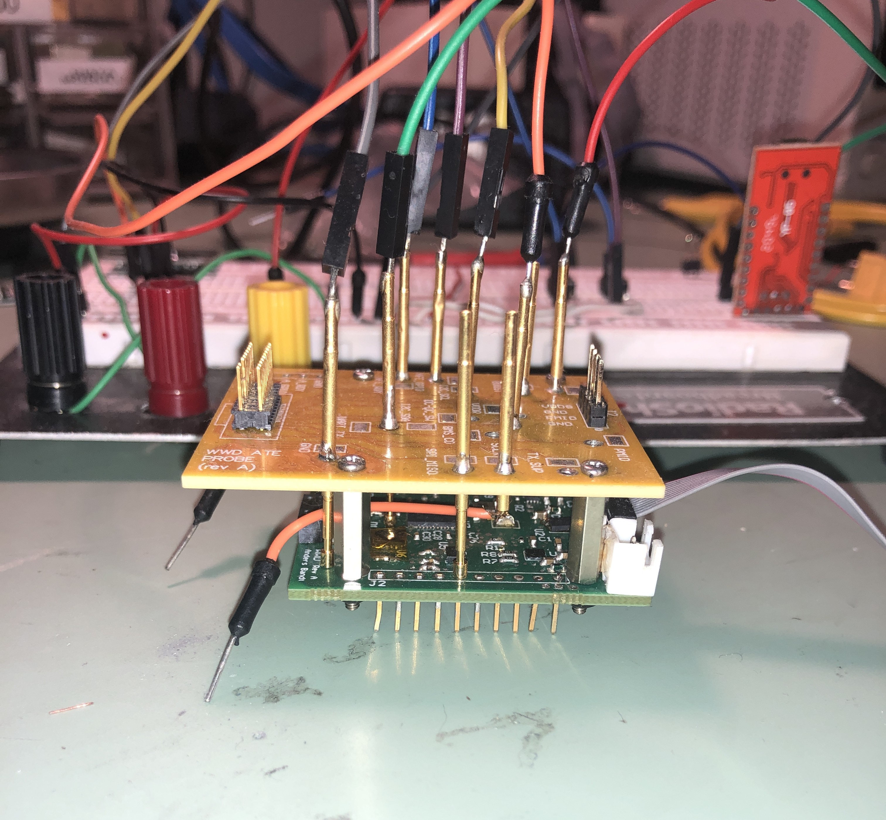
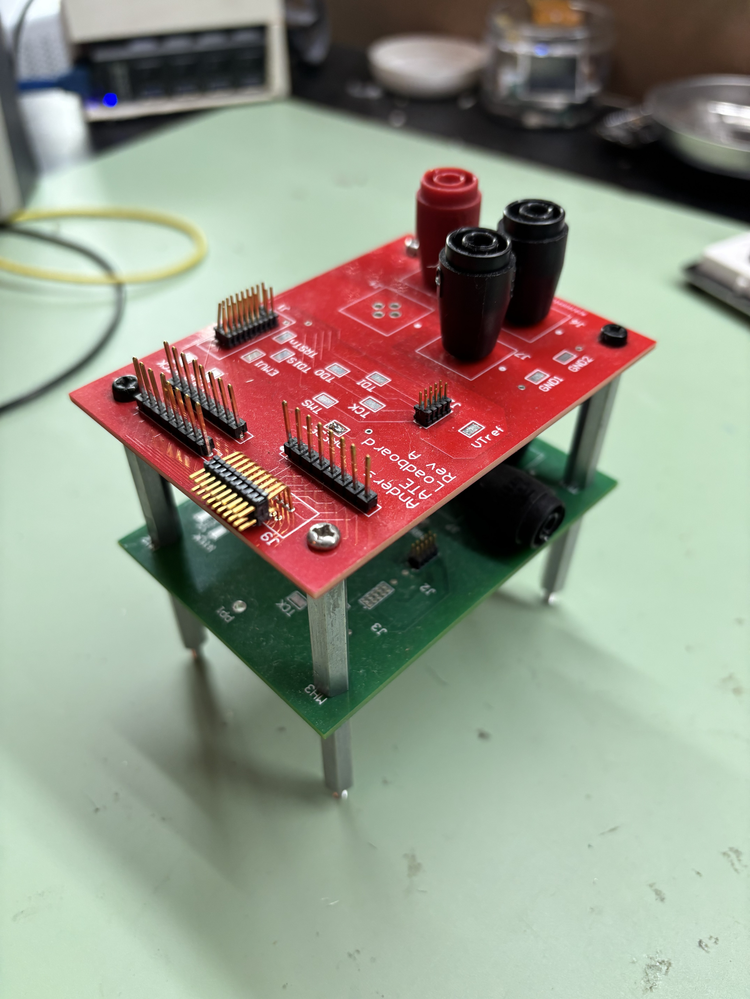

Introduction
When I was working at Texas Instruments I got exposed to "probe testing", which involved using probe needles to make electrical contact with a semiconductor wafer for testing all the ICs. Probe testing would be used for early-device characterization, as well as for testing final production parts. The diagram below shows a simplified view of what that looks like

Wafer probe testing has several advantages:
- Access to signals that may not be available after packaging
- Extremely high pin-count capability
- Reliable, repeatable electrical contact (once properly setup and aligned)
I wanted to take the same concept of probe testing and apply it to PCBs.
To be clear, this idea isn’t new. PCB testing methods like “bed of nails” or in-circuit testing (ICT) have existed for decades. But I wanted a version tailored to small embedded development boards.
The goal of this project is to build a mechanical and electrical fixture that mounts onto a PCB and makes contact with all desired test points at once. That fixture routes signals to external connectors, which then interface with bench equipment or a host PC.
Instead of individually wiring up power rails, oscilloscope probes, grounds, and debug headers every time I swap boards, the connections remain fixed. I can plug in a new PCB and immediately have consistent access to every signal. When you’re deep in debug — multiple supplies, odd grounding setups, extra boards, four oscilloscope channels, it's quite useful to have that ability.
Requirements
This project is fairly simple, really it's more of a mechanical design problem than a complicated electrical schematic problem. The eventual PCB created has no actual electrical components, and is really in a sense a glorified connector.

Resources
Essentially all you will need to start this project is
- ECAD software
- I used Altium, my preferred, but KiCAD is a great, free open-source alternative
- A PCB that you want to test
- it's really best if this PCB has mounting holes for a nice mechanical connection as well
- The coordinates of all your various test points on your PCB
- Probe needle components
One thing to consider is the shape of the probe tip you select. Depending on your pad shape and type, this should be selected.
You can even have multiple probe tip types per design. For example, in my board all the through-hole "pads" I have that are actually for a 2.54mm header, are a different type than my standard circular pad.

3D-printed prototype
It was fairly easy to get something quick and dirty working. For proof of concept I 3D printed a simple fixture that just had access to UART TX and RX lines.

This worked well enough, but I had some alignment issues. The probe needles were not touching down to the PCB in the correct spot. I tried to solve these issues with hot-glue, but that proved not to be an elegant solution. Hot glue often has a habit of seeming like a solution, but it is almost always replaced by something else!
For version 2, I solved the alignment issue by adding lots of upward thickness. I also physically mounted an FTDI converter onto the fixture.


Version 2 worked surprisingly well, and I used it for quite a while. Eventually, though, I wanted something more robust and with more connection options. This pushed the design into the final iteration, an actual PCB.
Laying out the PCB
To start the layout process, I made a table of all the test points I wanted to include in my design and marked down the XY coordinates. For layout, I simply just went through all my probe footprints and put them at that exact XY coordinate.
Routing was simple and could easily be done on a 2 layer board.

You can see above that I added a few different types of connections
Off-board connector (20-pin one at the bottom)
I knew that one function of this is board is that it would connect to another test board that would provide larger connectors such as banana jacks and more 2.54mm header pins on it. Thus, we would need a connector.
For connector type I really have grown to like typical IDC connectors. The cables for some length / pin combinations can be expensive, but the quality of these are already really good.
On-board test points
I also wanted the probe PCB itself to have some test points. These can be useful for either testing my cable connection, or just simple 2.54mm header wires or probes for certain signal access. It's also kind of a requirement to include these as access to any of the original test points will be blocked.
I love using the 5017 series from Keystone, but you can use any test point.
The final product
I ordered the boards from PCBWay, for about 35 dollars total. A quick soldering session later and I had a working probe tester hooked up to my board through standoffs.

I still ran into some alignment issues with this version, but my workaround was simple: I’d heat up the solder joint on each probe needle, wiggle it slightly into alignment with the test pad, and then let it cool. Surprisingly, this worked consistently across multiple boards, which suggests the PCB tolerances were tight enough that each unit didn’t require its own dedicated fixture. In a previous design, I made the probe holder thick enough to naturally guide the needles straight down onto the pads, which helped with alignment. That said, reheating and nudging the probe into place has been good enough so far. I’m still not entirely satisfied with this approach, though. One idea would be stacking two identical boards with small standoffs to create a more rigid alignment structure, but that feels like overkill and a waste of a perfectly good PCB.
One learning from this design was to define minimum clearances between test points. Some of the test points I placed too closely together, and with the thickness of each needle they would short to one another.
what the off-board connector looks like
So this thing plugs into another board designed, which I will just gloss over very quickly because it's not the main focus of this article.
This board has banana jacks, providing easy access to power supplies and DMM equipment.

I designed this board to be project-agnostic, and you can tell this from the silkscreen which is very generic and simply calls out the pin numbers. I don't yet have multiple projects where I have needed such a probe interface, but I'm sure the day will come!
Conclusion
The board works as expected! I'm really pleased with how this turned out. I also love the look with the green test PCB, the yellow probe board, and the red breakout board. The only minor annoyance is having to redo the standoff screws each time I swap boards. But there’s always something to improve, possibly I can move to a clamping solution or something.
I think version 2 will be even more useful. I'm hoping to actually add some components onto the board (either on the fixture PCB or my main interface board) to enable things like UART-USB conversion, current monitoring, LEDs, etc.
Long term, I'd like this hardware to integrate more tightly with my software controlled test setup. On the software side I would really like the option to be able to monitor specific voltages of pins. Either through a logic analyzer or an oscilloscope with some connection to my test PC. This would be much more in line with the semiconductor test equipment that I started my career on, where tests oven involved measuring analog voltages.